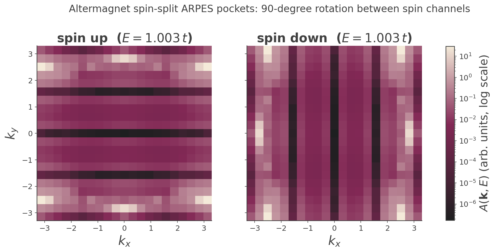

Altermagnetism (Spin-Split ARPES)
Altermagnetism: momentum-dependent spin splitting with zero net moment¶
An altermagnet is a collinear magnet that is neither a conventional antiferromagnet nor a ferromagnet: it has zero net magnetic moment, yet it exhibits a non-relativistic, momentum-dependent spin splitting of its bands with a definite (here \(d\)-wave) parity in \(\mathbf k\)-space1. This page uses KITE's ARPES capability to visualize that splitting directly, as a \(90^\circ\) rotation between the spin-up and spin-down constant-energy pockets.
The model, explicitly¶
examples/altermagnet_arpes.py's altermagnet() builds a square lattice
(\(\mathbf a_1=[1,0]\), \(\mathbf a_2=[0,1]\), \(a=1\)) with two magnetic sublattices in a checkerboard arrangement —
A at \([0,0]\), B at \([\tfrac12,\tfrac12]\) — made spin-full by four sublattices Aup, Bup, Adn, Bdn. The
ingredients:
- Néel exchange \(J=0.8\) as an on-site energy, alternating sign on A vs B and on up vs down: \(\varepsilon_{A\uparrow}=+J,\ \varepsilon_{B\uparrow}=-J,\ \varepsilon_{A\downarrow}=-J,\ \varepsilon_{B\downarrow}=+J\).
- Nearest-neighbor A–B hopping \(-t\) (\(t=1\)) on the four checkerboard bonds, identical for both spins (no spin-orbit coupling).
- Anisotropic next-nearest-neighbor hopping \(\delta=0.4\), spin-independent but sublattice-swapped: on A, \(-\delta\) along \(x\) and \(+\delta\) along \(y\); on B, \(+\delta\) along \(x\) and \(-\delta\) along \(y\).
Every hopping is real, and the two spin channels are decoupled, so the \(4\times4\) Bloch Hamiltonian is block-diagonal. Writing \(c_\mu\equiv\cos k_\mu\), the NN structure factor of the checkerboard bonds is
and the anisotropic NNN diagonal term is
The up-spin block (basis \(\{A\!\uparrow, B\!\uparrow\}\)) and down-spin block (basis \(\{A\!\downarrow, B\!\downarrow\}\)) are
Dispersion and the spin-splitting identity¶
Each \(2\times2\) block gives
Now use two symmetries of the building blocks. \(\gamma\) is symmetric under \(k_x\leftrightarrow k_y\): \(|\gamma(k_x,k_y)|=|\gamma(k_y,k_x)|\). The anisotropic term is antisymmetric under the same swap:
Therefore
The up- and down-spin bands are exact \(90^\circ\) rotations of one another. This follows purely from the antisymmetry of the sublattice-swapped NNN term under \(k_x\leftrightarrow k_y\), combined with the opposite-sign Néel field per spin — together they make the substitution \(J\to J\mp d\) interchangeable with a coordinate swap.
Why this is an altermagnet¶
Zero net moment. From the blocks above, \(\mathrm{Tr}\,H_\uparrow=(+J-d)+(-J+d)=0\) and
\(\mathrm{Tr}\,H_\downarrow=(-J-d)+(+J+d)=0\) identically in \(\mathbf k\) — the two spin blocks are separately
traceless, so the spin-up and spin-down spectra have the same sum: no net spin polarization when integrated
over the filled bands. This is an exact algebraic statement, not just a numerical observation (though the
example's own _verify_model() also confirms it numerically to machine precision on a k-grid).
Even-parity (\(d\)-wave) spin splitting. The splitting is \(\varepsilon_\downarrow(\mathbf k)-\varepsilon_\uparrow(\mathbf k)\propto d(\mathbf k)=2\delta(c_y-c_x)\), which transforms as \(\cos k_y-\cos k_x\) — a \(d_{x^2-y^2}\)-like, even function of \(\mathbf k\). Contrast:
- A conventional antiferromagnet would need a doubled unit cell / broken translation symmetry to produce any spin splitting; with an intact primitive cell its bands are spin-degenerate.
- A ferromagnet has a net moment and a spin splitting uniform in sign — not locked to a momentum-space symmetry pattern.
The altermagnet threads between: no net moment (like an AFM) but a robust, symmetry-protected, momentum-dependent splitting (unlike an AFM), of definite even parity (unlike a FM).
The ARPES walkthrough and result¶
To see the splitting, the example computes the spin-resolved spectral function with a one-hot orbital weight that projects onto a single spin channel:
weight = [1, 1, 0, 0] # spin-up: keep only Aup, Bup contributions
weight = [0, 0, 1, 1] # spin-down: keep only Adn, Bdn
Because the ARPES initial state is
\(|\mathbf k\rangle=\tfrac{1}{\sqrt N}\sum_{\mathbf r,\alpha}w_\alpha e^{i\mathbf k\cdot(\mathbf r+\mathbf d_\alpha)}|\mathbf r,\alpha\rangle\)
(see the Spectral Function write-up), setting the down-sublattice weights to zero
makes \(A(\mathbf k,E)\) measure only the up-spin spectral weight (and vice versa). KITE allows only one
arpes() request per output file, so spin-up and spin-down are two entirely separate KITEx runs
on two separate output files (altermagnet_arpes_up-output.h5 / ..._down-output.h5), each going through the
full Chebyshev-moment calculation and its own KITE-tools post-processing independently. No rotation, transpose,
or any other transformation is ever applied to one spin's data to produce the other's — the down-spin panel
below is the genuine, independently-computed output of the down-spin KITEx run, nothing more. The apparent
\(90^\circ\) relationship between the two panels is a result, not an input: it is the numerical footprint of the
\(\varepsilon_\uparrow(k_x,k_y)=\varepsilon_\downarrow(k_y,k_x)\) identity derived above, and the whole point of the
example is that this relationship falls out on its own. A full 2D \(\mathbf k\)-grid spanning the Brillouin
zone \([-\pi,\pi]^2\) is used (rather than a 1D high-symmetry cut) precisely because the phenomenon is a rotation
of the whole band structure in \(\mathbf k\)-space, far more legible as a 2D map than a line cut.

At this coarse (\(21\times21\)) k-grid the intensity is dominated by a handful of very bright pixels near the
Brillouin-zone boundary, which on a linear color scale swamps everything else down to near-black — exactly
the pattern already seen in the ldos_map() example, and fixed the same way
here: the figure above uses a log color scale. On it, the underlying structure is clearly visible as bands
of low intensity (where no band lies near the probed energy) running horizontally (roughly \(k_y\approx0,
\pm\pi/2\)) for spin-up and vertically (roughly \(k_x\approx0,\pm\pi/2\)) for spin-down — a direct picture of
the same feature rotated by \(90^\circ\) between the two spin channels.
Verified result: the spin-up and spin-down intensity maps satisfy grid_up == grid_down.T exactly
(to floating-point precision, not just approximately) — expected here because, unlike the stochastic map
estimators elsewhere in these docs, a single-\(\mathbf k\)-point ARPES calculation is deterministic, so two
Hamiltonian blocks that are exactly equal under \(\mathbf k\to(\mathbf k_y,\mathbf k_x)\) swap (proven algebraically
above) produce bit-for-bit identical KPM output under that swap.
The nodal-line subtlety¶
The splitting \(d(\mathbf k)=2\delta(c_y-c_x)\) vanishes wherever \(\cos k_x=\cos k_y\), i.e. on the diagonals \(k_x=k_y\) and \(k_x=-k_y\). On these lines the two spin blocks become identical and the bands are exactly degenerate — genuine nodal lines of the \(d\)-wave splitting, not a numerical artifact, and the direct algebraic consequence of the even-parity form derived above: any \(d_{x^2-y^2}\) function has nodes on the BZ diagonals.
Example
Get more familiar with KITE: run the full script yourself, and try varying \(\delta\) (the splitting amplitude) or \(J\) (which sets the gap between the two pockets) to see how the rotated pockets change shape.
-
L. Šmejkal, J. Sinova, and T. Jungwirth, Phys. Rev. X 12, 040501 (2022). ↩